大數據在鑑別式 AI 中的應用｜觀念圖解複習
這一章的主角是鑑別式模型：給一筆資料，判斷它屬於哪一類（或預測一個數字）。容易卡住的地方有兩種：一是模型名字和招牌特性對不起來（核技巧是誰？條件獨立是誰？），二是兩個長得很像的現象分不清（過度擬合和資料漂移、ROC 的兩個軸）。所以每個單元照「為什麼需要它 → 一步步搭起來 → 名詞各自定義 → 整合比較表 → 記憶鉤子 → 易錯提醒」排列。
- 單元 ① 的「分類模型速查表」用黃框標出來，模型名稱和特性的對應先背這一張。
- 背法：遮住第一欄，看「看到這些關鍵字就想到它」那一欄，說得出模型名字，就過關了。
- 最常混的三組：核技巧＋最大間隔＝SVM；貝氏定理＋條件獨立＋快＝樸素貝氏；非線性＋資料量龐大＝深度神經網路 DNN。
先看全貌全章地圖：一個分類專案的五站
本章五個單元，剛好是做一個分類專案的順序。後面就沿著這條線一站一站講：
| 站 | 這一站在問什麼 | 本章的關鍵名詞 |
|---|---|---|
| ① 選模型 | 資料是直的還是彎的？資料量大不大？ | 鑑別式、生成式、SVM、樸素貝氏、DNN |
| ② 訓練時別學歪 | 模型是學太少、背太多，還是世界變了？ | 欠擬合、過度擬合、資料漂移、提早停止 |
| ③ 用對的指標打分 | 只看準確率會不會被騙？ | 混淆矩陣、精確率、召回率、ROC、AUC |
| ④ 資料太大時分工 | 切資料還是切模型？誰保管參數？一步看多少資料？ | 資料平行、參數伺服器、小批次 SGD、高基數 |
| ⑤ 前處理與上線後 | 圖片怎麼整理？上線後怎麼維持？ | 調整大小、歸一化、資料增強、MLOps、聯邦學習、公平性 |
單元 ①鑑別式 vs 生成式，以及分類模型速查
為什麼需要它？ 分類模型的名字很多，每個都有一兩個「招牌特性」，例如核技巧、條件獨立、非線性又資料量龐大。只要把名字和招牌特性對起來，看到一句描述就能說出是哪個模型。所以先搞懂兩大類模型在做什麼，再把常見的分類模型放進同一張表，一次比較它們的核心想法、關鍵字和優缺點。
一步步搭起來
- 分類問題長什麼樣。每筆資料有幾個特徵（X），要判斷它的類別（Y），例如「這封信是不是垃圾信」「這位客戶會不會流失」。
- 兩種解題思路。鑑別式模型直接學「看到 X，Y 是哪一類的機率」，也就是畫出一條決策邊界；生成式模型先學「每一類的資料大概長什麼樣」，再用貝氏定理回推類別，而且能產生新資料。
- 界線是直的還是彎的。邏輯迴歸、線性 SVM 畫直線（線性）；決策樹、KNN、核 SVM、神經網路能畫彎曲的界線（非線性）。
- 資料量大不大。資料很多時，要看模型的「訓練」和「預測」會不會變得太慢。核 SVM、KNN 在超大資料上比較吃力；邏輯迴歸、樸素貝氏、樹模型、用小批次訓練的神經網路比較能擴充。
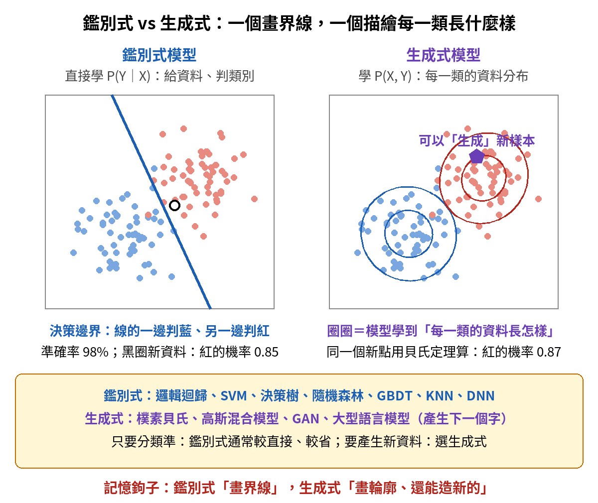
名詞各自定義
鑑別式模型 Discriminative Model
- 是什麼：直接學習 P(Y｜X)：給定資料特徵 X，判斷類別 Y 的機率，或直接學出決策邊界。
- 優點：目標就是「分得準」，通常比生成式模型直接、省資源，分類準確度也常比較好。
- 代表：邏輯迴歸、SVM、決策樹、隨機森林、GBDT、KNN、深度神經網路（用來分類時）。
生成式模型 Generative Model
- 是什麼：學習資料和類別的聯合分布 P(X, Y)（或每一類的 P(X｜Y)），也就是「每一類的資料長什麼樣」。
- 能做的事：用貝氏定理推回 P(Y｜X) 來分類；也能產生新樣本，例如生成圖片、文字。
- 代表：樸素貝氏、高斯混合模型、隱馬可夫模型、GAN、大型語言模型。
- 分類上的小提醒：學術上樸素貝氏常被歸為生成式模型，但它最常見的用途是「拿來分類」，所以也常和其他分類模型放在一起比較。記住它的招牌特性（貝氏定理、條件獨立、快）最實用；若你的教材另有說法，以教材為準。
決策邊界 Decision Boundary
- 是什麼：特徵空間裡把不同類別分開的那條線（或曲面）。線的一邊判 A 類、另一邊判 B 類。
- 例子：上圖左邊的藍線就是邏輯迴歸學出的決策邊界，訓練資料準確率約 98%。
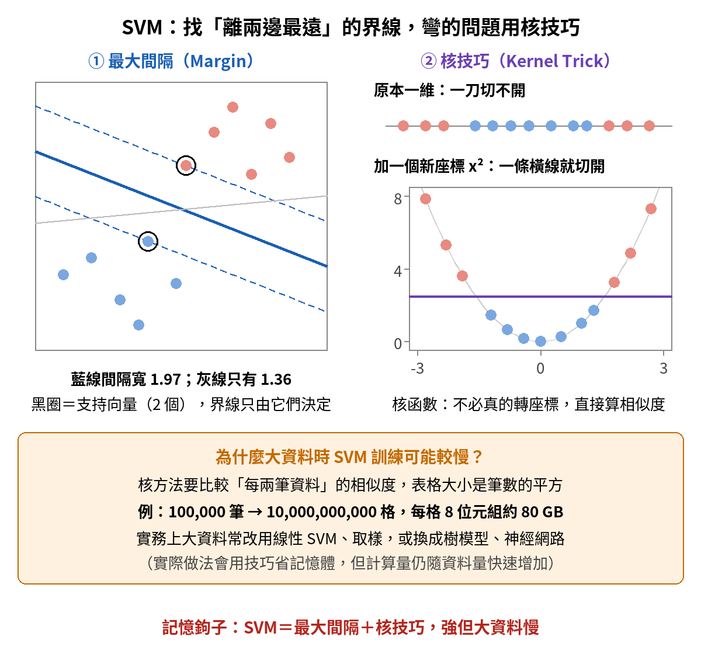
支持向量機 SVM（Support Vector Machine）
- 核心想法：找一條離兩邊最近的點都最遠的界線（最大間隔，Margin）。上圖藍線的間隔寬 1.97，換一條轉 30° 的灰線，間隔只剩 1.36。
- 支持向量：最靠近界線的那幾個點（上圖黑圈）。界線的位置由它們決定，其他點稍微移動也不影響。
- 核技巧 Kernel Trick：資料在原本的空間分不開時，想像把它搬到更高維的空間就分得開了（上圖右：加一個 x² 座標，一條橫線就切開）。核函數讓模型不必真的算出新座標，直接算「升維後兩筆資料有多像」。常見核函數有線性核、多項式核、RBF（高斯）核。
- 缺點：核 SVM 要比較「每兩筆資料」的相似度，計算量大約隨筆數的平方以上成長。10 萬筆就有 100 億組配對，所以資料量極大時訓練可能很慢。
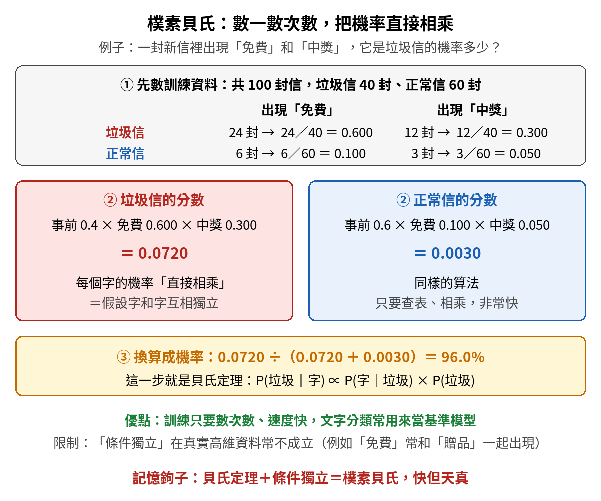
樸素貝氏分類器 Naive Bayes
- 核心想法：用貝氏定理算「看到這些特徵時，屬於某類的機率」，並假設特徵之間條件獨立，所以每個特徵的機率可以直接相乘。
- 例子：上圖垃圾信分數 0.4 × 0.6 × 0.3 ＝ 0.072，正常信分數 0.6 × 0.1 × 0.05 ＝ 0.003，換算後是垃圾信的機率約 96%。
- 優點：訓練只要數次數，計算簡單、速度快，在文字分類（垃圾信、情感分析）常被拿來當基準模型。
- 限制：「條件獨立」在真實的高維資料裡常常不成立，算出來的機率值可能不準；它沒有核技巧，也不是以「訓練慢」出名。
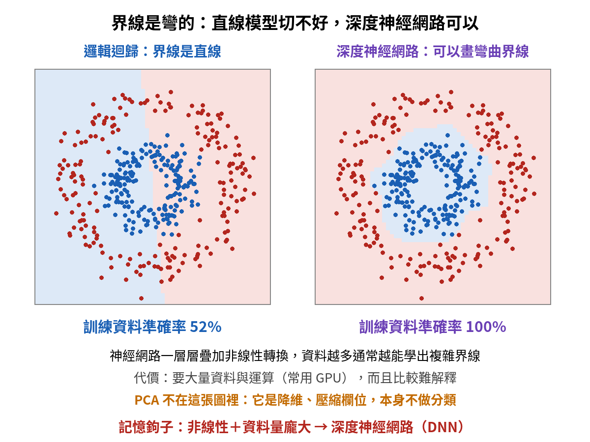
深度神經網路 DNN（Deep Neural Network）
- 核心想法：很多層神經元疊起來，每一層做一次「加權總和＋非線性激活函數」，層數越多越能表示複雜、彎曲的關係。
- 例子：上圖同心圓資料，邏輯迴歸畫的是直線，準確率約 52%；兩層隱藏層的神經網路畫出圓形界線，訓練資料準確率 100%。
- 適合：非線性關係＋資料量龐大，例如影像、語音、文字、大量行為紀錄；可以用小批次訓練、GPU 加速，資料越多通常越能發揮。
- 缺點：需要大量資料和運算資源、超參數多、比較難解釋為什麼這樣判斷。
其他常見分類模型
- 邏輯迴歸 Logistic Regression：把特徵加權總和丟進 Sigmoid 函數變成 0～1 的機率，界線是直線。快、好解釋，常當第一個基準模型。名字有「迴歸」，但主要用來分類。
- 決策樹 Decision Tree：一連串「如果…就…」的問題把資料切開，像流程圖。好解釋，但一棵很深的樹容易過度擬合。
- 隨機森林 Random Forest：很多棵決策樹各自用抽樣資料訓練，再投票（Bagging）。比單棵樹穩定，每棵樹可以平行訓練。
- 梯度提升決策樹 GBDT：一棵接一棵訓練，每棵新樹專門修正前面的誤差（Boosting）。表格資料上準確度常常很好；XGBoost、LightGBM 是常見實作。
- K 近鄰 KNN：不事先訓練，預測時找最近的 K 筆資料投票。概念簡單、能處理非線性；但資料量大時，每次預測都要和大量資料算距離，很慢、很吃記憶體，也需要先做特徵縮放。
- 線性判別分析 LDA：找一個投影方向讓不同類別分得最開，界線是直線；也常用來降維。
常被放在一起、但不是分類器的名字（對照用）
- 主成分分析 PCA：降維方法（非監督式），把很多欄位壓成少數幾個新欄位，而且抓的是線性結構；它本身不做分類，壓完還要再接一個分類模型。
- 線性迴歸 Linear Regression：預測連續數值（例如房價），不是分類器，表示的也是線性關係。
整合比較表
分類模型速查表
| 模型 | 核心想法 | 看到這些關鍵字就想到它 | 優點 | 缺點／限制 | 容易搞混 |
|---|---|---|---|---|---|
| 邏輯迴歸 | 加權總和轉成機率 | 線性、機率、基準模型 | 快、好解釋 | 界線是直線 | 線性迴歸 |
| SVM | 最大間隔的界線 | 核技巧、最大間隔、超平面、支持向量 | 高維表現好 | 大資料訓練慢 | 邏輯迴歸 |
| 樸素貝氏 | 貝氏定理＋條件獨立 | 貝氏定理、條件獨立 | 計算簡單、快 | 假設常不成立 | SVM |
| 決策樹 | 如果…就…的規則 | 規則、流程圖 | 好懂 | 易過度擬合 | 隨機森林 |
| 隨機森林 | 多棵樹投票 | Bagging、投票、平行 | 穩定、可平行 | 模型較大 | GBDT |
| GBDT | 樹接力修正誤差 | Boosting、殘差 | 表格資料常很準 | 依序訓練 | 隨機森林 |
| KNN | 看最近 K 個鄰居 | 鄰居、距離 | 簡單、可非線性 | 大資料預測慢 | K-means |
| DNN | 多層非線性轉換 | 非線性、資料量龐大、GPU | 能學複雜關係 | 難解釋、要大量資料 | PCA |
兩大類模型再並排一次：
| 比較項目 | 鑑別式模型 | 生成式模型 |
|---|---|---|
| 學什麼 | P(Y｜X)：看到資料判類別 | P(X, Y)：每一類的資料分布 |
| 畫面比喻 | 畫一條界線 | 畫每一類的輪廓 |
| 能不能產生新資料 | 通常不行 | 可以 |
| 分類效率 | 通常較直接、較省 | 要多學資料分布，通常較費工 |
| 代表 | 邏輯迴歸、SVM、樹模型、KNN、DNN | 樸素貝氏、高斯混合、GAN、大型語言模型 |
- 鑑別式「畫界線」，生成式「畫輪廓、還能造新的」。
- SVM＝最大間隔＋核技巧，強但大資料慢；樸素貝氏＝貝氏定理＋條件獨立，快但天真。
- 非線性＋資料量龐大＝DNN；PCA 是降維，不是分類器。
單元 ②過度擬合、欠擬合、資料漂移：三種「表現變差」
為什麼需要它？ 模型表現變差時，原因可能完全不同：模型太簡單、模型把訓練資料背起來、或是上線後世界變了。原因不同，對策也不同。所以要學會看現象說出名字，例如「訓練集持續變好、驗證集開始下降」是哪一種。
一步步搭起來
- 把資料分成三份。訓練集（拿來學）、驗證集（訓練中檢查、調參數用）、測試集（最後打分數用）。驗證集和測試集是模型「沒看過」的資料。
- 一邊訓練、一邊看兩條線。每訓練一輪，就記下訓練集和驗證集的表現。
- 兩條線一起變好＝還在學規律。這時繼續訓練是有幫助的。
- 訓練線還在升、驗證線開始降＝過度擬合。模型開始把訓練資料裡的雜訊和巧合也背下來。在這個轉折點附近停下來，就是「提早停止」。
- 上線之後再看一次。就算訓練時一切正常，上線幾個月後新資料的分布可能變了，表現也會下降，這是資料漂移。
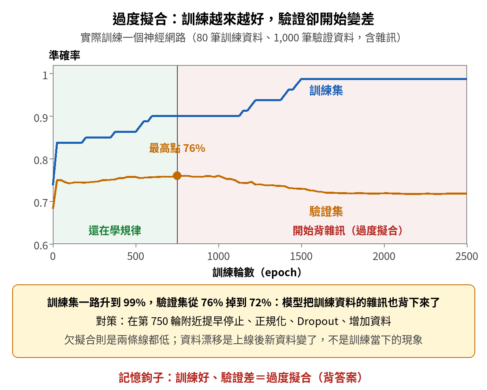
上圖是實際訓練一個神經網路得到的曲線：驗證集準確率在第 750 輪左右達到最高約 76%，之後訓練集繼續升到約 99%，驗證集卻掉到約 72%。這個「開口越來越大」的形狀，就是過度擬合的典型樣子。
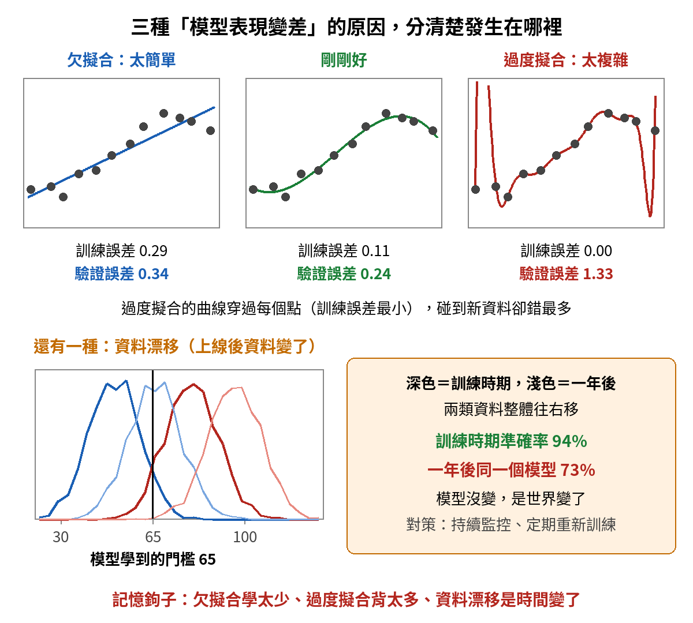
名詞各自定義
過度擬合 Overfitting
- 是什麼：模型在訓練資料上表現很好，在沒看過的資料上表現變差，因為它把訓練資料的雜訊、巧合也記下來了。
- 訊號：訓練準確率持續提高，驗證準確率到某個點後開始下降。上圖多項式例子：11 次曲線訓練誤差 0.00，驗證誤差卻是 1.33。
- 對策：提早停止（Early Stopping）、正規化（L1、L2）、Dropout、增加資料或資料增強、降低模型複雜度、交叉驗證。
欠擬合 Underfitting
- 是什麼：模型太簡單，連訓練資料的規律都沒學起來。
- 訊號：訓練和驗證表現都差。上圖用直線去配彎曲資料，訓練誤差 0.29、驗證誤差 0.34，兩個都偏高。
- 對策：換更複雜的模型、加入更好的特徵、訓練久一點、減少過強的正規化。
資料漂移 Data Drift
- 是什麼：模型上線後，新進資料的分布和訓練時不一樣了，例如消費習慣改變、季節變化、感測器換型號。
- 訊號：訓練、驗證時表現都正常，部署一段時間後實際效能下降。上圖同一個門檻在訓練時期準確率約 94%，資料整體右移後掉到約 73%。
- 相關名詞：概念漂移（Concept Drift）：連「特徵和答案的關係」都變了，例如詐騙手法改變，同樣的行為以前正常、現在可疑。
- 對策：持續監控資料分布和模型效能、設定警報、定期或觸發式重新訓練（單元 ⑤ 的 MLOps）。
模型收斂 Convergence
- 是什麼：訓練一段時間後，損失（誤差）不再明顯下降、參數趨於穩定。
- 重點：收斂是正常的訓練狀態，表示「學得差不多了」，本身不是問題，也不等於過度擬合。
整合比較表
| 現象 | 訓練集表現 | 驗證集表現 | 什麼時候看得到 | 原因 | 對策 |
|---|---|---|---|---|---|
| 欠擬合 | 差 | 差 | 訓練當下 | 模型太簡單 | 換複雜模型、加特徵 |
| 剛剛好 | 好 | 好 | 訓練當下 | 學到真正規律 | 保持、做最終測試 |
| 過度擬合 | 很好，持續變好 | 到某點後變差 | 訓練當下 | 背下雜訊 | 提早停止、正規化、Dropout、加資料 |
| 資料漂移 | （訓練時正常） | （訓練時正常） | 上線後 | 新資料分布改變 | 監控、重新訓練 |
| 模型收斂 | 趨於穩定 | 趨於穩定 | 訓練當下 | 學得差不多了 | 可以停止訓練 |
- 訓練好、驗證差＝過度擬合（背答案）；兩個都差＝欠擬合（學太少）。
- 資料漂移是「時間」問題：上線後世界變了，不是訓練曲線上的現象。
- 收斂只是「學完了、穩定了」，是正常狀態。
單元 ③評估指標：混淆矩陣、精確率、召回率、ROC 與 AUC
為什麼需要它？ 只看「準確率」會被騙。像罕見疾病、詐欺交易這類資料，正例非常少，一個什麼都猜「沒有」的模型準確率也能很高，卻一個都沒抓到。所以要把結果拆開，用好幾個指標從不同角度看。ROC 曲線和 PR 曲線則是把「門檻」這個變數也考慮進去。
一步步搭起來（用一組實算數字）
- 模型對每筆資料給一個分數。分數高於門檻判「有病」，低於門檻判「沒病」。
- 和實際答案對照，填進四格。這四格叫混淆矩陣：TP（抓對）、FN（漏掉）、FP（誤報）、TN（正確放行）。
- 用四格算出各種指標。準確率、精確率、召回率、特異度、偽陽性率，各自回答不同的問題。
- 門檻改來改去，每個門檻都算一組（FPR, TPR），連成曲線＝ROC 曲線。曲線下面積就是 AUC。
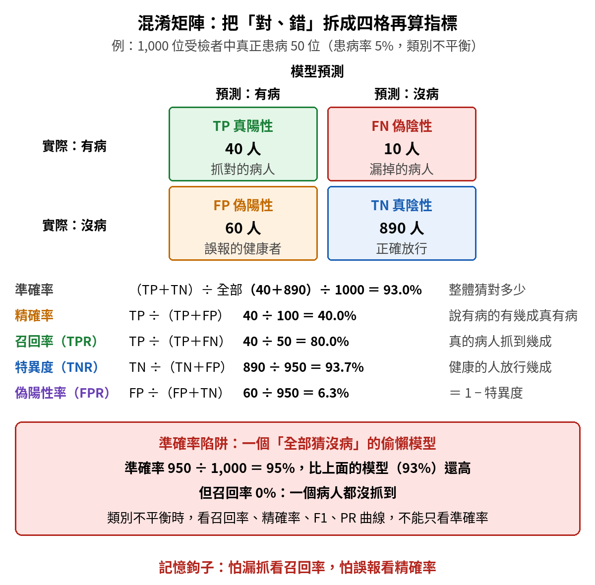
名詞各自定義
混淆矩陣 Confusion Matrix
- 是什麼：把預測結果和實際答案交叉成 2 × 2 的四格表：TP 真陽性、FN 偽陰性、FP 偽陽性、TN 真陰性。
- 記法：後面的「陽性／陰性」是模型的預測；前面的「真／偽」是預測對不對。例如 FP＝預測陽性、但預測錯了（其實沒病）。
準確率 Accuracy
- 公式：（TP＋TN）÷ 全部。上圖（40＋890）÷ 1,000 ＝ 93%。
- 陷阱：類別不平衡時會誤導：全部猜「沒病」的模型準確率 95%，比上面的模型還高，但召回率是 0%。
精確率 Precision
- 公式：TP ÷（TP＋FP）。上圖 40 ÷ 100 ＝ 40%。
- 回答的問題：模型說「有病」的人裡面，有幾成真的有病？怕誤報時看它（例如垃圾信過濾，不想把正常信丟掉）。
召回率 Recall（＝真陽性率 TPR、敏感度）
- 公式：TP ÷（TP＋FN）。上圖 40 ÷ 50 ＝ 80%。
- 回答的問題：真正有病的人，模型抓到幾成？怕漏抓時看它（例如罕見疾病篩檢、詐欺偵測）。
特異度 Specificity（＝真陰性率 TNR）與偽陽性率 FPR
- 特異度：TN ÷（TN＋FP），健康的人被正確放行的比例。上圖 890 ÷ 950 ≈ 93.7%。
- 偽陽性率 FPR：FP ÷（FP＋TN），健康的人被誤報的比例，FPR ＝ 1 − 特異度。上圖 60 ÷ 950 ≈ 6.3%。
- 偽陰性率 FNR：FN ÷（FN＋TP），病人被漏掉的比例，FNR ＝ 1 − 召回率。
F1 分數 F1-Score
- 公式：精確率和召回率的調和平均：2 × 精確率 × 召回率 ÷（精確率＋召回率）。上圖 2 × 0.4 × 0.8 ÷ 1.2 ≈ 0.53。
- 用途：想同時兼顧精確率和召回率時，用一個數字代表。
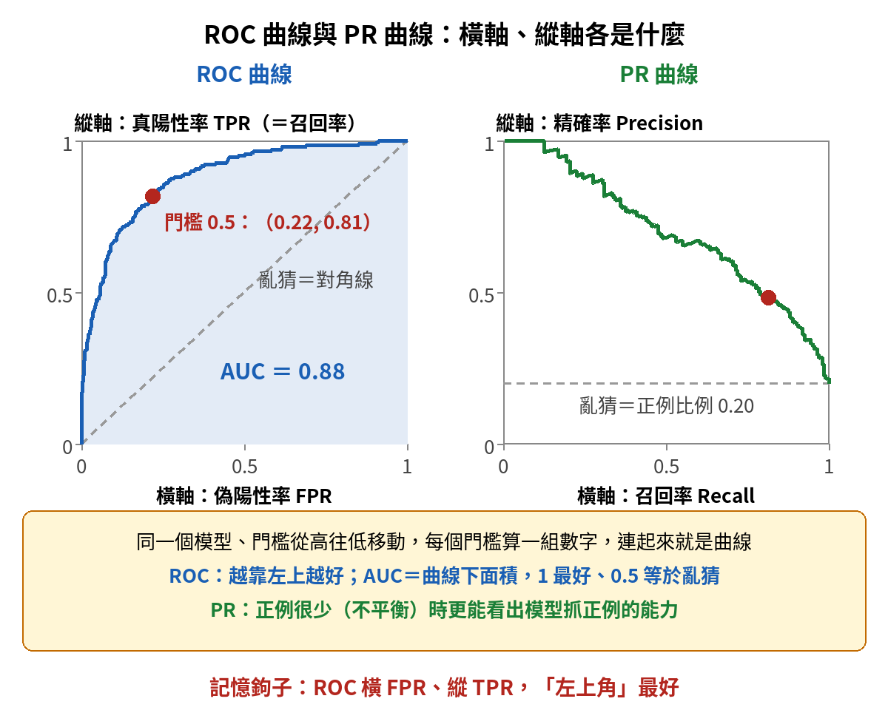
ROC 曲線 Receiver Operating Characteristic Curve
- 兩個軸：橫軸是偽陽性率 FPR；縱軸是真陽性率 TPR（召回率）。
- 怎麼畫：把門檻從高調到低，每個門檻算一組（FPR, TPR）畫成一點，連起來。上圖門檻 0.5 時這一點是（0.22, 0.81）。
- 怎麼看：越靠左上角越好（誤報少、抓得多）；對角線代表亂猜。
AUC（Area Under the Curve，曲線下面積）
- 是什麼：ROC 曲線下方的面積，介於 0 到 1。1 是完美、0.5 等於亂猜。上圖 AUC 約 0.88。
- 直覺意義：隨機抽一個正例和一個負例，模型給正例的分數比較高的機率。
PR 曲線 Precision-Recall Curve
- 兩個軸：常見畫法是橫軸召回率、縱軸精確率。
- 用途：正例很少（極度不平衡）時，PR 曲線比 ROC 更能看出模型抓正例的能力。亂猜的基準線是正例比例（上圖 0.20）。
整合比較表
| 指標 | 公式 | 回答的問題 | 什麼時候特別看它 | 上圖數值 |
|---|---|---|---|---|
| 準確率 | （TP＋TN）÷ 全部 | 整體猜對多少 | 類別大致平衡時 | 93% |
| 精確率 | TP ÷（TP＋FP） | 說有的，真的有幾成 | 怕誤報 | 40% |
| 召回率（TPR） | TP ÷（TP＋FN） | 真的有的，抓到幾成 | 怕漏抓：罕病、詐欺 | 80% |
| 特異度（TNR） | TN ÷（TN＋FP） | 沒有的，正確放行幾成 | 怕冤枉好人 | 93.7% |
| FPR | FP ÷（FP＋TN） | 沒有的，被誤報幾成 | ROC 的橫軸 | 6.3% |
| F1 | 精確率與召回率的調和平均 | 兩者兼顧 | 不平衡又兩者都在乎 | 0.53 |
| AUC | ROC 曲線下面積 | 整體排序能力 | 比較不同模型 | 0.88 |
| 比較項目 | ROC 曲線 | PR 曲線 |
|---|---|---|
| 橫軸 | 偽陽性率 FPR | 召回率 Recall |
| 縱軸 | 真陽性率 TPR（召回率） | 精確率 Precision |
| 最好的位置 | 左上角 | 右上角 |
| 亂猜基準 | 對角線（AUC ＝ 0.5） | 水平線＝正例比例 |
| 適合 | 一般比較、類別不太懸殊 | 正例極少的不平衡資料 |
- ROC：橫 FPR、縱 TPR，「左上角」最好；AUC 1 最好、0.5 是亂猜。想成「誤報多少（往右）、抓到多少（往上）」。
- 怕漏抓看召回率，怕誤報看精確率；類別不平衡時別只看準確率。
- 準確率、F1 是「一個門檻下的一個數字」，不拿來當曲線的軸。
單元 ④分散式訓練：資料平行、參數伺服器、小批次 SGD、高基數特徵
為什麼需要它？ 資料多到一台電腦放不下、算不完時，就要讓很多台電腦（或很多張 GPU）一起訓練同一個模型。這時要回答三個問題：要切什麼？（資料還是模型）誰保管參數？（參數伺服器）每一步看多少資料？（梯度下降的變體）。另外，大資料常有「類別多到爆」的欄位，例如使用者 ID，直接做獨熱編碼會撐爆記憶體。
一步步搭起來
- 先懂梯度下降。模型先隨便猜參數，算出誤差，再沿著「讓誤差變小」的方向（負梯度）走一小步，重複很多次。
- 決定一步看多少資料。看全部（批次）、看 1 筆（隨機）、看一小批（小批次）。大資料分散式訓練最常用小批次。
- 把資料切給多台電腦＝資料平行。每台拿一份資料、用同一個模型，算出自己那份的梯度。
- 把梯度集中起來＝參數伺服器。工作節點（Worker）把梯度上傳，伺服器節點（Server）平均後更新全域參數，再讓大家下載新參數。
- 模型太大才拆模型＝模型平行。一張 GPU 放不下整個模型時，把不同層放到不同 GPU。
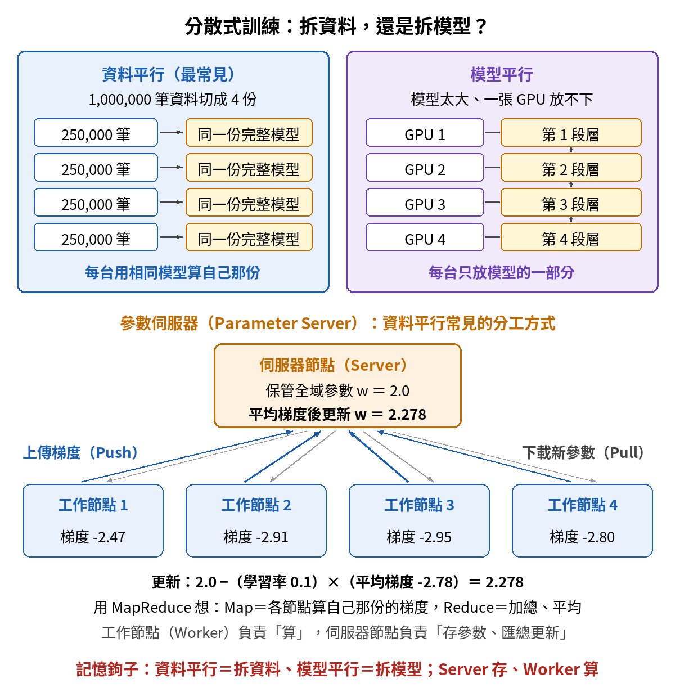
名詞各自定義
資料平行化 Data Parallelism
- 是什麼：把大型資料集按筆數切成多個子集，分配到不同計算節點；每個節點用相同的模型處理自己那份資料，再把結果（梯度）合併。
- 例子：上圖 1,000,000 筆資料切給 4 台，每台 250,000 筆，四台的模型是同一份。
- 常見實作：參數伺服器架構，或是節點之間直接互相加總梯度的 All-Reduce 方式；Spark MLlib、TensorFlow、PyTorch 都支援資料平行。
模型平行化 Model Parallelism
- 是什麼：模型太大、一個節點放不下時，把模型的不同部分（例如不同層）放到不同節點或 GPU。
- 和資料平行的差別：資料平行「拆資料、每台模型一樣」；模型平行「拆模型、資料依序流過各台」。大型語言模型常兩者並用。
參數伺服器 Parameter Server
- 是什麼：分散式訓練的一種架構，分成伺服器節點和工作節點兩種角色。
- 伺服器節點（Server）：保存與管理全域模型參數，接收各工作節點的梯度，彙總後更新參數，再提供最新參數。
- 工作節點（Worker）：讀取自己那份資料，用目前的參數計算梯度，上傳（Push）梯度、下載（Pull）新參數。
- 例子：上圖四個工作節點的梯度平均是 −2.78，伺服器用學習率 0.1 更新：2.0 − 0.1 ×（−2.78）＝ 2.278。
用 MapReduce 計算梯度
- Map 階段：每個節點用目前參數，計算自己那份資料的局部梯度（或局部梯度總和）。
- Reduce 階段：把各節點的局部梯度加總、平均，得到全域梯度，用來更新模型參數。
- 限制：每一輪都要讀寫磁碟，反覆訓練很多輪時較慢，這也是 Spark 常被用來做機器學習的原因（見第 10 章）。
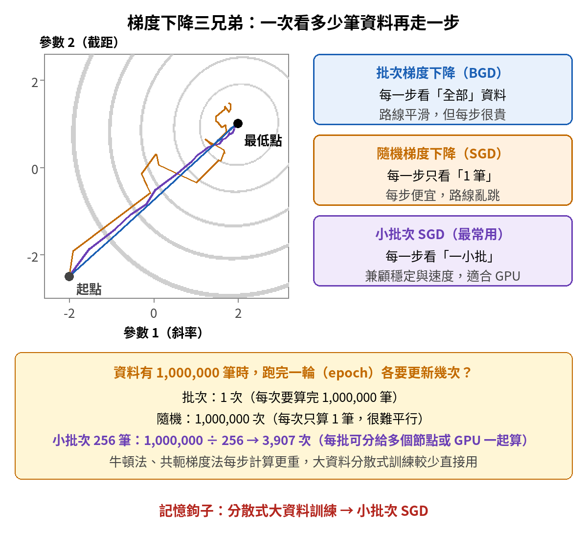
批次梯度下降 BGD（Batch Gradient Descent）
- 怎麼運作：每一步用全部資料算梯度，再更新一次。
- 優缺點：路線平滑穩定；但資料很大時每走一步都很貴，分散在多台時，每步都要等所有節點算完全部資料。
隨機梯度下降 SGD（Stochastic Gradient Descent）
- 怎麼運作：每一步只用 1 筆資料算梯度就更新。
- 優缺點：每步很便宜、更新次數多；但路線亂跳，而且一次只算 1 筆，不容易發揮平行運算。
小批次隨機梯度下降 Mini-batch SGD
- 怎麼運作：每一步用一小批資料（例如 32、256 筆）算梯度。
- 為什麼最常用：兼顧穩定和速度；每一批可以拆給多個節點或 GPU 一起算，特別適合分散式大資料訓練。上圖 1,000,000 筆、每批 256 筆，一輪約更新 3,907 次。
- 延伸：Adam、Momentum 等最佳化器，多半也是建立在小批次梯度上的改良。
牛頓法與共軛梯度法（對照用）
- 牛頓法 Newton's Method：除了梯度，還用二階導數（海森矩陣）決定步伐。參數很多時，這個矩陣大到難以計算和儲存。
- 共軛梯度法 Conjugate Gradient：比一般梯度下降聰明地選方向，常用在中小規模、需要精確解的問題；大資料分散式訓練較少直接使用。
GPU 平行運算
- 為什麼快：GPU 有數千個小核心，擅長同時做大量相同的矩陣運算，而神經網路訓練的主要工作正是矩陣乘法。
- 和小批次的關係：一小批資料剛好組成一個矩陣，一次送進 GPU 平行運算。
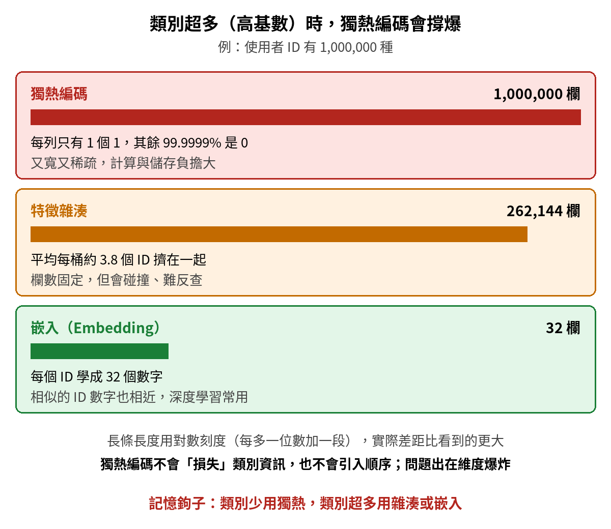
高基數類別特徵 High Cardinality
- 是什麼：類別型欄位的可能值非常多，例如使用者 ID、商品 ID、郵遞區號。
- 獨熱編碼的問題：每個類別開一欄，特徵維度急遽增加，每列幾乎全是 0（非常稀疏），計算和儲存負擔大。上圖 1,000,000 種 ID 就要 1,000,000 欄，每列 0 佔 99.9999%。
- 獨熱編碼「不會」造成的事：它不會損失類別資訊（每類都有自己的欄），也不會引入順序關係；類別數量也沒有固定上限。
高基數的替代做法
- 特徵雜湊 Feature Hashing：用雜湊函數把類別丟進固定數量的桶（上圖 262,144 桶），欄數固定，但會有碰撞。
- 嵌入 Embedding：讓模型把每個類別學成一小串數字（上圖 32 個），相似的類別數字也相近，深度學習推薦系統常用。
- 目標編碼、頻率編碼：用「該類別的平均答案」或「出現次數」取代類別；目標編碼要小心不要把答案洩漏進特徵。
- 標籤編碼 Label Encoding（對照）：紅＝1、綠＝2、藍＝3 這種直接編號，才會引入不存在的順序關係。
整合比較表
| 名詞 | 切什麼／做什麼 | 每台的模型 | 適合 | 看到這些關鍵字就想到它 |
|---|---|---|---|---|
| 資料平行 | 按筆數切資料 | 同一個模型 | 資料很多（最常見） | 資料子集、相同模型 |
| 模型平行 | 切模型的層或部分 | 各放一部分 | 模型大到放不下 | 不同層分到不同節點 |
| 參數伺服器 | Server 存參數、Worker 算梯度 | Worker 下載最新參數 | 資料平行的分工方式 | 全域參數、彙總梯度 |
| MapReduce 梯度 | Map 算局部梯度、Reduce 匯總 | 同一個模型 | 批次式分散計算 | Reduce＝加總平均 |
| 比較項目 | 批次 BGD | 隨機 SGD | 小批次 SGD | 牛頓法 |
|---|---|---|---|---|
| 每步看多少資料 | 全部 | 1 筆 | 一小批 | 全部＋二階資訊 |
| 每步成本 | 高 | 很低 | 中 | 非常高 |
| 路線 | 平滑 | 亂跳 | 大致平滑 | 步伐大、步數少 |
| 平行化 | 要等全部算完 | 不易平行 | 容易分給多節點、GPU | 矩陣太大難分散 |
| 大資料分散式 | 少用 | 少單獨用 | 最常用 | 少用 |
- 資料平行＝拆資料、每台同一個模型；模型平行＝拆模型。
- 參數伺服器：Server 存參數、Worker 算梯度。MapReduce：Map 算局部梯度、Reduce 加總平均。
- 分散式大資料訓練 → 小批次 SGD。
- 類別少用獨熱，類別超多用雜湊或嵌入；引入假順序的是標籤編碼。
單元 ⑤資料前處理與上線維運：圖像前處理、梯度消失、MLOps、聯邦學習、公平性
為什麼需要它？ 模型要能用，前面要把資料整理好，後面要能長期穩定地跑。這個單元把「進模型之前」（圖像前處理）、「訓練深網路時」（梯度消失）和「上線之後」（MLOps、聯邦學習、公平性）的名詞放在一起。
一步步搭起來
- 圖片先整理。統一尺寸、把像素值縮到固定範圍、用翻轉旋轉增加樣本，才餵進 CNN 之類的分類模型。
- 網路很深時注意梯度。誤差往回傳時，每過一層就乘一次導數，太小會消失、太大會爆炸。
- 部署後持續監控。效能下降或資料漂移時重新訓練，整個流程自動化，這就是 MLOps。
- 資料不能集中時用聯邦學習；牽涉到人時檢查公平性。
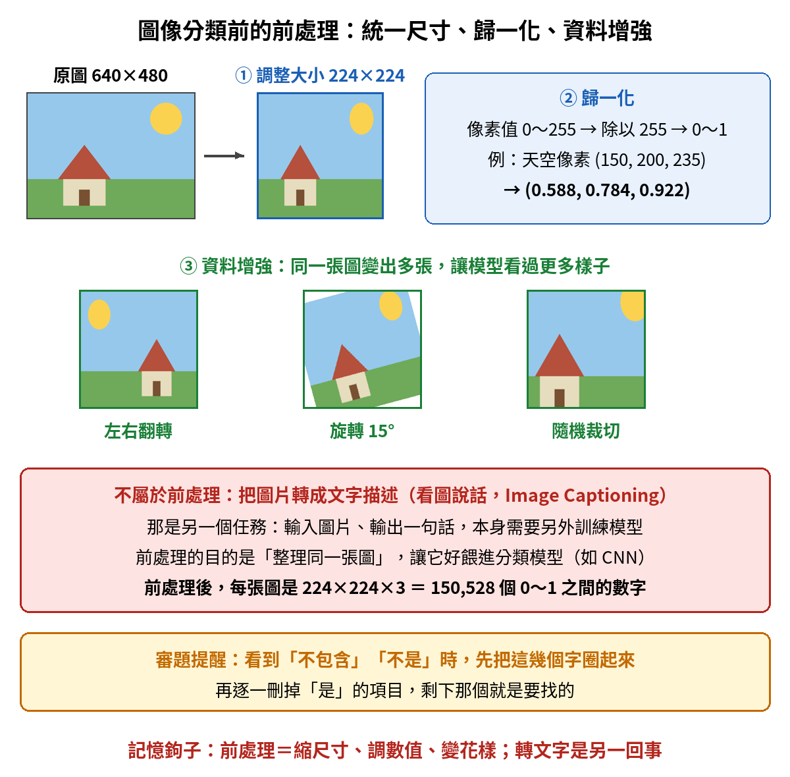
名詞各自定義
調整圖像大小 Resizing
- 是什麼：把不同大小的圖片統一成模型要求的輸入尺寸，例如 224 × 224。
- 為什麼：很多 CNN 的輸入層尺寸是固定的，而且統一尺寸才能把一批圖片組成同一個矩陣一起運算。
圖像歸一化 Normalization
- 是什麼：把像素值從 0～255 縮放到 0～1（除以 255），或減平均、除標準差做標準化。
- 例子：上圖天空像素（150, 200, 235）÷ 255 ≈（0.588, 0.784, 0.922）。
- 為什麼：數值範圍一致，訓練比較穩定、收斂比較快（和第 10 章的特徵縮放是同一個道理）。
資料增強 Data Augmentation
- 是什麼：對訓練圖片做隨機旋轉、翻轉、裁切、調亮度等變化，產生更多樣的訓練樣本。
- 目的：讓模型看過更多樣子、減少過度擬合；通常只用在訓練集。
圖像描述 Image Captioning（不是前處理）
- 是什麼：輸入一張圖片、輸出一句描述文字的任務，例如「一間紅屋頂的小房子在草地上」。
- 為什麼不算前處理：它本身就需要另外訓練一個模型，輸出是文字；圖像分類的前處理是「整理同一張圖」讓它好餵進模型，不會把圖換成文字。
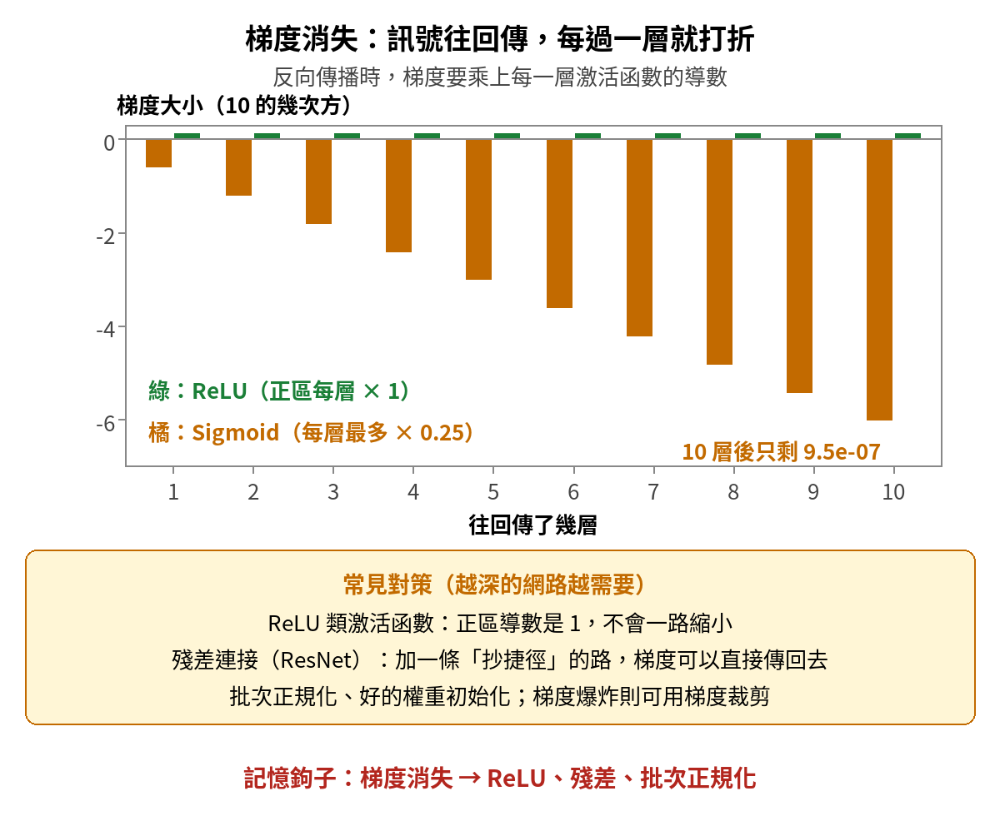
梯度消失與梯度爆炸 Vanishing／Exploding Gradients
- 是什麼：反向傳播時，梯度要乘上每一層的導數。Sigmoid 的導數最大只有 0.25，連乘 10 層只剩約 0.00000095，前面的層幾乎學不動（消失）；反過來，每層都乘大於 1 的數，梯度會越來越大（爆炸）。
- 對策：ReLU 類激活函數（正區導數為 1）、殘差連接（ResNet 的捷徑）、批次正規化（Batch Normalization）、合適的權重初始化；梯度爆炸可以用梯度裁剪。
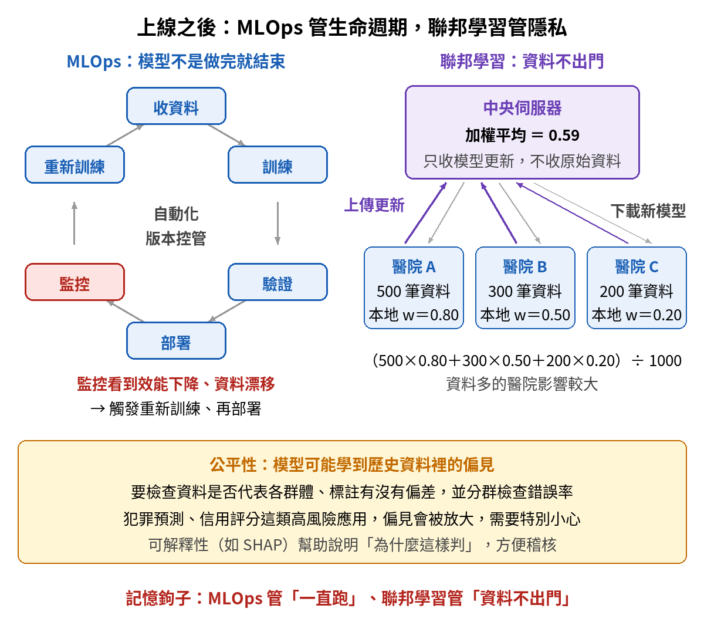
MLOps（Machine Learning Operations）
- 是什麼：把機器學習模型的整個生命週期（收資料、訓練、驗證、部署、監控、重新訓練）用自動化、版本控管的方式管理起來。
- 為什麼需要：模型上線後會遇到資料漂移，效能會下降；需要持續監控和定期更新，而不是做完就放著。
- 和 DevOps 的關係：概念延伸自軟體開發的 DevOps，多了資料版本、模型版本、模型監控這些機器學習特有的部分。
聯邦學習 Federated Learning
- 核心思想：資料留在原地（手機、醫院、銀行），只把模型更新傳到中央伺服器彙總，原始資料不集中。
- 例子：上圖三家醫院各自訓練，伺服器依資料量加權平均：（500 × 0.80＋300 × 0.50＋200 × 0.20）÷ 1,000 ＝ 0.59。
- 優點與挑戰：保護隱私、符合法規；但各地資料分布不同、通訊成本高，模型更新也可能被惡意干擾。
公平性 Fairness 與演算法偏見 Algorithmic Bias
- 是什麼：模型對特定群體（性別、種族、地區）產生系統性不利的預測。
- 從哪裡來：歷史資料本身帶有偏見、某些群體資料太少、標註有偏差、特徵間接代表敏感屬性（例如郵遞區號）。
- 要關注的環節：資料收集與標註、特徵選擇、模型評估（分群檢查錯誤率）都要檢查，不是只看整體準確率。
- 高風險應用：犯罪預測、信用評分、招聘等，偏見可能被放大並影響真實的人，需要特別警惕。
其他上線時要考慮的事
- 可解釋性：金融、醫療等領域要能說明「為什麼拒絕這筆貸款」，方便稽核、符合法規、建立信任（第 10 章的 SHAP）。
- 非功能性指標：除了準確率、AUC，還要看預測速度（延遲）、每秒能處理多少筆（吞吐量）、成本、可擴充性。
- 即時性 Velocity：詐欺偵測這類應用要在很短時間內完成預測，模型和資料管線都要夠快。
整合比較表
| 名詞 | 屬於哪個階段 | 做什麼 | 看到這些關鍵字就想到它 | 容易搞混 |
|---|---|---|---|---|
| 調整大小 | 前處理 | 統一圖片尺寸 | Resizing、統一尺寸 | 裁切 |
| 歸一化 | 前處理 | 像素縮到 0～1 | Normalization、[0, 1] | 標準化 |
| 資料增強 | 前處理（訓練集） | 旋轉翻轉裁切變出更多樣本 | Augmentation | 資料清理 |
| 圖像描述 | 另一個任務 | 圖片轉成一句話 | Image Captioning | 前處理 |
| ReLU／殘差／批次正規化 | 模型設計 | 對付梯度消失 | 深層網路、梯度消失 | Dropout |
| MLOps | 上線維運 | 管理模型生命週期 | 部署、監控、自動化 | DevOps |
| 聯邦學習 | 訓練方式 | 資料不出門，只傳模型更新 | 隱私、分散資料 | 分散式訓練 |
| 公平性 | 全流程 | 避免對特定群體不公 | 偏見、歧視 | 準確率 |
- 前處理＝縮尺寸、調數值、變花樣；轉文字描述是另一個任務。
- 梯度消失 → ReLU、殘差、批次正規化。
- MLOps 管「一直跑」、聯邦學習管「資料不出門」、公平性管「不偏心」。
總整理本章要記的十句話
- 鑑別式學 P(Y｜X)、畫界線；生成式學 P(X, Y)、畫輪廓、能造新資料。
- 非線性＋資料量龐大的分類＝深度神經網路 DNN；PCA 是降維，不是分類器。
- SVM＝最大間隔＋核技巧，處理非線性很強，但資料量極大時訓練可能慢。
- 樸素貝氏＝貝氏定理＋條件獨立，計算簡單、速度快，假設常不成立。
- 訓練好、驗證差＝過度擬合；兩個都差＝欠擬合；上線後新資料變了＝資料漂移。
- ROC：橫軸 FPR、縱軸 TPR；AUC 1 最好、0.5 是亂猜。
- 怕漏抓看召回率，怕誤報看精確率；類別不平衡時別只看準確率。
- 資料平行＝拆資料、每台同一個模型；參數伺服器：Server 存參數、Worker 算梯度。
- 分散式大資料訓練最常用小批次 SGD；高基數類別做獨熱編碼會維度爆炸、非常稀疏。
- 圖像前處理＝縮尺寸、歸一化、資料增強；轉文字描述是另一個任務。
考前速查全章名詞總彙整表
把五個單元的比較表濃縮成一張。複習時遮住右邊三欄，看名詞說得出定義，再對照。
| 名詞 | 一句話定義 | 口訣 | 容易跟誰搞混 |
|---|---|---|---|
| 單元 ① 鑑別式 vs 生成式與分類模型 | |||
| 鑑別式模型 | 直接學 P(Y｜X)，畫決策邊界 | 畫界線 | 生成式模型 |
| 生成式模型 | 學 P(X, Y)，可產生新樣本 | 畫輪廓、造新的 | 鑑別式模型 |
| 決策邊界 | 把不同類別分開的線或曲面 | 一邊一類 | 超平面 |
| 邏輯迴歸 | 加權總和→Sigmoid→機率，直線界線 | 線性基準 | 線性迴歸 |
| SVM | 最大間隔界線，由支持向量決定 | 離兩邊最遠 | 邏輯迴歸 |
| 核技巧 | 不用真的轉座標，直接算高維相似度 | 升維切開 | 降維 |
| 樸素貝氏 | 貝氏定理＋特徵條件獨立 | 快但天真 | SVM |
| 決策樹／隨機森林／GBDT | 規則切分／多樹投票／依序修正誤差 | 一棵／投票／接力 | 彼此 |
| KNN | 找最近的 K 個鄰居投票 | 看鄰居 | K-means |
| DNN | 多層非線性轉換，適合大資料 | 非線性＋大資料 | PCA |
| PCA | 線性降維，不是分類器 | 壓縮欄位 | DNN、分類器 |
| 單元 ② 過度擬合與資料漂移 | |||
| 過度擬合 | 訓練好、驗證差，背下雜訊 | 背答案 | 資料漂移 |
| 欠擬合 | 訓練、驗證都差，模型太簡單 | 學太少 | 過度擬合 |
| 資料漂移 | 上線後新資料分布改變 | 世界變了 | 過度擬合 |
| 概念漂移 | 特徵和答案的關係改變 | 規則變了 | 資料漂移 |
| 模型收斂 | 損失不再明顯下降、趨於穩定 | 學完了 | 過度擬合 |
| 提早停止 | 驗證表現開始變差時停止訓練 | 見好就收 | 收斂 |
| 單元 ③ 評估指標 | |||
| 混淆矩陣 | TP、FN、FP、TN 四格表 | 四格對照 | 相關係數矩陣 |
| 準確率 | （TP＋TN）÷ 全部 | 整體猜對 | 精確率 |
| 精確率 | TP ÷（TP＋FP） | 怕誤報 | 召回率 |
| 召回率（TPR） | TP ÷（TP＋FN） | 怕漏抓 | 精確率 |
| 特異度（TNR）／FPR | TN ÷（TN＋FP）／FP ÷（FP＋TN） | FPR＝1−特異度 | FNR |
| F1 | 精確率與召回率的調和平均 | 兩者兼顧 | 準確率 |
| ROC 曲線 | 橫軸 FPR、縱軸 TPR | 左上角最好 | PR 曲線 |
| AUC | ROC 曲線下面積，0.5 是亂猜 | 越接近 1 越好 | 準確率 |
| PR 曲線 | 橫軸召回率、縱軸精確率 | 不平衡時用 | ROC 曲線 |
| 單元 ④ 分散式訓練與高基數 | |||
| 資料平行 | 切資料子集，每節點同一個模型 | 拆資料 | 模型平行 |
| 模型平行 | 模型不同層放不同節點 | 拆模型 | 資料平行 |
| 參數伺服器 | Server 存全域參數、Worker 算梯度 | Server 存、Worker 算 | MapReduce |
| MapReduce 梯度 | Map 算局部梯度、Reduce 加總平均 | 分頭算、再合起來 | 參數伺服器 |
| 批次／隨機／小批次 SGD | 每步看全部／1 筆／一小批 | 小批次最常用 | 牛頓法 |
| 牛頓法 | 用二階導數，參數多時太重 | 步伐準但貴 | 梯度下降 |
| GPU | 數千核心平行做矩陣運算 | 矩陣加速 | CPU |
| 高基數獨熱編碼 | 維度爆炸、非常稀疏、負擔大 | 撐爆 | 標籤編碼 |
| 特徵雜湊／嵌入 | 固定桶數／學成一小串數字 | 類別超多用 | 獨熱編碼 |
| 標籤編碼 | 直接編號，會引入假順序 | 1、2、3 | 獨熱編碼 |
| 單元 ⑤ 前處理與上線維運 | |||
| 調整大小 | 統一圖片輸入尺寸 | 縮尺寸 | 裁切 |
| 歸一化 | 像素 0～255 縮到 0～1 | 調數值 | 標準化 |
| 資料增強 | 旋轉翻轉裁切，增加樣本 | 變花樣 | 資料清理 |
| 圖像描述 | 圖片轉文字的獨立任務，不是前處理 | 看圖說話 | 前處理 |
| 梯度消失 | 梯度往回傳越乘越小 | 訊號打折 | 梯度爆炸 |
| ReLU／殘差／批次正規化 | 對付梯度消失的常見方法 | 抄捷徑 | Dropout |
| MLOps | 管理模型整個生命週期 | 一直跑 | DevOps |
| 聯邦學習 | 資料留原地，只傳模型更新 | 資料不出門 | 分散式訓練 |
| 演算法偏見 | 對特定群體系統性不利 | 不偏心 | 雜訊 |
作答習慣否定題審題提醒
本章有些觀念其實會，卻容易在「問法」上丟分：問的是「不包含」，卻選了一個「包含」的。這不是觀念問題，是審題習慣，練一下就改得過來。
- 看到「不包含」「不是」「不屬於」「錯誤的是」「何者為非」，先把那幾個字圈起來（或在心裡唸一次）。
- 換個問法：改成「哪些『是』？」逐一打勾，剩下沒打勾的那個才是要找的。
- 如果四個裡有三個你都覺得「對」，多半是否定的問法，回頭再看一次題幹。
- 先別急著選第一個看起來正確的，全部看完再決定。
動手練自我檢測 10 題
自編情境練習，練的是「看情境選模型、選指標、選做法」。先自己想好答案，再點「看答案」。
- 某平台有 5,000 萬筆使用者點擊紀錄，要判斷每位使用者會不會買某商品，而且特徵之間的關係很複雜、明顯不是直線。邏輯迴歸、KNN、深度神經網路三個裡面，哪個比較合適？另外兩個各有什麼問題？
看答案
深度神經網路比較合適：非線性＋資料量龐大，正是 DNN 擅長的情況，可以用小批次＋GPU 訓練。邏輯迴歸的界線是直線，抓不到複雜關係；KNN 雖能處理非線性，但每次預測都要和 5,000 萬筆資料比距離，太慢、太吃記憶體。
- 同事說：「我用 PCA 把 200 個欄位壓成 10 個，這樣就完成分類了。」這句話哪裡有問題？
看答案
PCA 是降維，不是分類器。它只是把欄位壓縮成少數新欄位，壓完之後還要再接一個分類模型（例如邏輯迴歸、隨機森林）才算完成分類。
- 一個模型的特色是「找出離兩類資料都最遠的界線，還能用核函數處理彎曲的界線」，但資料到上千萬筆時訓練變得很慢。它是哪個模型？
看答案
支持向量機 SVM。最大間隔＋核技巧是它的招牌；核方法要比較大量資料兩兩之間的相似度，所以資料極大時訓練可能很慢。
- 要做垃圾信分類的第一版基準模型，希望訓練非常快，只需要數一數每個字在垃圾信和正常信出現的次數。適合哪個模型？它背後有什麼假設？
看答案
樸素貝氏分類器。它用貝氏定理計算機率，並假設各個字（特徵）在給定類別下彼此條件獨立，所以機率可以直接相乘；訓練只要數次數，非常快。
- 訓練一個模型時，前 20 輪訓練和驗證準確率一起上升；第 20 輪以後訓練準確率升到 99%，驗證準確率卻從 85% 掉到 78%。這是什麼現象？你會怎麼處理？如果改成「上線半年後準確率從 90% 掉到 75%」，又是什麼現象？
看答案
前者是過度擬合：訓練集持續變好、驗證集開始下降。可以在第 20 輪附近提早停止，或加正規化、Dropout、增加資料。後者是資料漂移（也可能是概念漂移）：上線後新資料和訓練時不同，要監控並重新訓練。
- 某篩檢模型在 2,000 人中：真正有病 100 人，模型抓到 70 人；健康的 1,900 人中，被誤報 95 人。請算出準確率、召回率、精確率和偽陽性率。
看答案
TP＝70、FN＝30、FP＝95、TN＝1,805。準確率（70＋1,805）÷ 2,000 ≈ 93.8%；召回率 70 ÷ 100 ＝ 70%；精確率 70 ÷ 165 ≈ 42.4%；偽陽性率 95 ÷ 1,900 ＝ 5%。準確率看起來很高，但有 30% 的病人被漏掉。
- 畫 ROC 曲線時，橫軸和縱軸各要放什麼？如果模型 A 的 AUC 是 0.93、模型 B 是 0.51，B 大概是什麼程度？
看答案
橫軸放偽陽性率 FPR，縱軸放真陽性率 TPR（召回率）。AUC 0.51 幾乎等於 0.5，也就是和亂猜差不多，模型 B 幾乎沒有分辨能力。
- 公司有 800 萬筆訓練資料，模型本身不大，想用 8 台機器一起訓練。應該用資料平行還是模型平行？在參數伺服器架構中，伺服器節點和工作節點各負責什麼？
看答案
資料平行。資料多、模型不大，就把 800 萬筆切給 8 台（每台 100 萬筆），每台用同一個模型。伺服器節點保存並更新全域參數；工作節點用自己的資料計算梯度，上傳梯度、下載新參數。
- 資料裡有一個「商品編號」欄位，共 300 萬種。直接用獨熱編碼會發生什麼事？有哪些替代做法？如果改成「1 號商品＝1、2 號商品＝2…」直接編號，又可能有什麼問題？
看答案
獨熱編碼會產生 300 萬欄，每列幾乎全是 0（非常稀疏），計算和儲存負擔很大。替代做法：特徵雜湊、嵌入（Embedding）、頻率編碼或目標編碼。直接編號是標籤編碼，會讓模型誤以為 3 號比 1 號「大」，引入不存在的順序關係。
- 整理一批要拿去訓練圖像分類模型的照片時，同事列了四件事：把每張照片統一成 256 × 256、把像素值除以 255、隨機左右翻轉、請另一個模型幫每張照片寫一段說明文字。哪一件不是前處理？回答前，先說你圈了這句話的哪幾個字。
看答案
先圈「不是」兩個字。統一尺寸（調整大小）、除以 255（歸一化）、左右翻轉（資料增強）都是常見前處理；寫說明文字（圖像描述）不是，它是另一個獨立的任務。